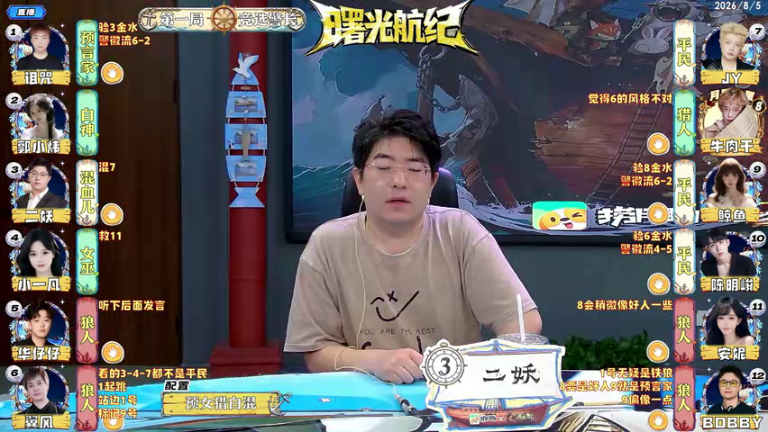

20260805 正赛 第十期 Day-2 第一局-预女猎白混
机器整理或已入库均不代表人工核实；请依据原文和来源逐项复核。
文字补充与具体疑点
逐句核对确认3号混血儿选择7号平民且为好人混；首夜11号自刀被女巫救起，随后6/12狼人自爆，狼刀3号混血儿后4号女巫被放逐。末段狼队拍刀点名9/10，但未补成无依据的两条独立狼刀事件。
AI已核实 · 终局拍刀9/10的双目标结算：文本明确点名两个拍刀目标，但模板狼刀槽每个事件为单目标且未呈现分轮结算，不强写双目标/重复槽。
狼人决定拍刀，狼人可拍两刀，给出的道路是9号、10号
转写时间：00:59:42.170
核查结论与依据
狼队终局拍刀两个目标为9号与10号，狼队获胜；这是终局双目标叙述，不拆成常规狼刀。 依据与推断：复盘原句在“狼人可拍两刀”后直接点名9号、10号，随后宣布狼队获胜。板型没有终局拍刀槽位，因此只修正胜方。 来源 data/seasons/S22/第11周_正赛第10期/2026-08-05/2026-08-05_S22_第11周_正赛第10期_第01局_预女猎白混__BV1DFM26ME2R_P01_CID40629960904.平台AI字幕_ai-zh_01_c921583e0c.原始.json · 0:58:53–0:59:53 原句：嗯我怕你过来帮好 第一局游戏结束了 预女猎白混血儿版型 本游戏预言家一号女巫 4号猎人 8号白神 2号狼人 5号六号 11号 12号平民 7号九号十号 本游戏的混血和3号榜样是7号平民 本游戏为好人混 首页11号狼人被安排自刀女巫开药解救 形成平安夜 预言家当夜验证了3号玩家混血儿为好人身份 上警环节 6号狼人自爆 入夜狼人击杀7号平民女巫 毒杀12号狼人 72双死 当夜预言家验证2号玩家为好人身份 第二天延期竞选警长环节 12号狼人吞毒自爆 本局游戏警徽流失 入夜狼人击杀3号混血儿 预言家验证10号玩家为好人身份 第三天白天 4号女巫被抗推出局 然后狼人JIN决定拍刀 狼人可拍两刀 给出的道路是9号十号游戏结束 狼人阵营图名获胜 好各位大宝老师们 这里是京城大赛第22季曙光航迹
AI已核实 · 12号吞毒自爆与第2夜双死的时序：12号已被记在上一夜与7号双死，字幕又在第二天说其吞毒自爆；未新增第二次死亡事件，保留时序疑点。
7号、12号双死……第二天延期竞选……12号狼人吞毒自爆
转写时间：00:59:25.330
核查结论与依据
第二夜毒12、刀7与第二天延期竞选阶段12“吞毒自爆”是复盘分别描述夜间命中和警上行为；警长竞选在夜死正式宣布之前可发生，记录一次12的自爆不意味着第二次12死亡。原文两处均明确，不能因复盘先说双死后说警上动作而删除动作。 依据与推断：第二夜毒12、刀7与第二天延期竞选阶段12“吞毒自爆”是复盘分别描述夜间命中和警上行为；警长竞选在夜死正式宣布之前可发生，记录一次12的自爆不意味着第二次12死亡。原文两处均明确，不能因复盘先说双死后说警上动作而删除动作。 来源 data/seasons/S22/第11周_正赛第10期/2026-08-05/2026-08-05_S22_第11周_正赛第10期_第01局_预女猎白混__BV1DFM26ME2R_P01_CID40629960904.平台AI字幕_ai-zh_01_c921583e0c.原始.json · 0:58:53–0:59:53 原句：嗯我怕你过来帮好 第一局游戏结束了 预女猎白混血儿版型 本游戏预言家一号女巫 4号猎人 8号白神 2号狼人 5号六号 11号 12号平民 7号九号十号 本游戏的混血和3号榜样是7号平民 本游戏为好人混 首页11号狼人被安排自刀女巫开药解救 形成平安夜 预言家当夜验证了3号玩家混血儿为好人身份 上警环节 6号狼人自爆 入夜狼人击杀7号平民女巫 毒杀12号狼人 72双死 当夜预言家验证2号玩家为好人身份 第二天延期竞选警长环节 12号狼人吞毒自爆 本局游戏警徽流失 入夜狼人击杀3号混血儿 预言家验证10号玩家为好人身份 第三天白天 4号女巫被抗推出局 然后狼人JIN决定拍刀 狼人可拍两刀 给出的道路是9号十号游戏结束 狼人阵营图名获胜 好各位大宝老师们 这里是京城大赛第22季曙光航迹
画面座位姓名核对
按同日固定座位复用：2026-08-05。每座保留实际来源截图，未跨比赛日推定。
截图来源：BV1DFM26ME2R · 00:29:33.900

| 座位 | 画面ID | 统一人名 | 来源 |
|---|---|---|---|
| 1号 | 诅咒 | 诅咒 | BV1DFM26ME2R · 00:29:33.900 |
| 2号 | 郭小炜 | 郭小炜 | BV1DFM26ME2R · 00:29:33.900 |
| 3号 | 二妖 | 二妖 | BV1DFM26ME2R · 00:29:33.900 |
| 4号 | 新小一凡 | 小一凡 | BV1DFM26MEWR · 00:30:35.100 |
| 5号 | 未知 | 华仔仔 | BV1DFM26ME2R · 00:29:33.900 |
| 6号 | 翼风 | 翼风 | BV1DFM26ME2R · 00:29:33.900 |
| 7号 | JY | JY | BV1hFM26ME7o · 00:31:25.500 |
| 8号 | 牛肉干 | 牛肉干 | BV1DFM26ME2R · 00:29:33.900 |
| 9号 | 鲸鱼 | 董鲸鱼 | BV1DFM26ME2R · 00:29:33.900 |
| 10号 | 陈明峻 | 陈明峻 | BV1DFM26MEWR · 00:30:35.100 |
| 11号 | 安妮 | 安妮 | BV1DFM26ME2R · 00:29:33.900 |
| 12号 | BOBBY | Bobby | BV1DFM26ME2R · 00:29:33.900 |


座位身份
| 座位 | 姓名 | 身份 | 阵营 | 学习目标 | 学习形态 |
|---|---|---|---|---|---|
| 1 | 诅咒 | 预言家 | 好人 | 未知 | 未知 |
| 2 | 郭小炜 | 白神 | 好人 | 未知 | 未知 |
| 3 | 二妖 | 混血儿 | 好人 | 未知 | 未知 |
| 4 | 小一凡 | 女巫 | 好人 | 未知 | 未知 |
| 5 | 华仔仔 | 狼人 | 狼人 | 未知 | 未知 |
| 6 | 翼风 | 狼人 | 狼人 | 未知 | 未知 |
| 7 | JY | 平民 | 好人 | 未知 | 未知 |
| 8 | 牛肉干 | 猎人 | 好人 | 未知 | 未知 |
| 9 | 董鲸鱼 | 平民 | 好人 | 未知 | 未知 |
| 10 | 陈明峻 | 平民 | 好人 | 未知 | 未知 |
| 11 | 安妮 | 狼人 | 狼人 | 未知 | 未知 |
| 12 | Bobby | 狼人 | 狼人 | 未知 | 未知 |
开局夜晚
开局夜晚
| 事项 | 已知事实 |
|---|---|
| 混血儿选择榜样（首夜） | 混血儿选择榜样（首夜）：3号（混血儿，二妖）选择7号（平民，JY） |
| 狼队击杀 | 狼队击杀：狼队击杀11号（狼人，安妮） |
| 女巫解药 | 女巫解药：4号（女巫，小一凡）使用解药11号（狼人，安妮） |
| 预言家查验 | 预言家查验：1号（预言家，诅咒）查验3号（混血儿，二妖）；结果：好人 |
| 混血儿胜利阵营 | 混血儿胜利阵营：3号（混血儿，二妖）好人阵营 |
展开转写未提供的2个槽位
| 事项 | 缺口 |
|---|---|
| 女巫毒药 | 女巫毒药：转写没有说明，留待补充 |
| 猎人技能 | 猎人技能：转写没有说明，留待补充 |
第1天白天
第1天白天
| 事项 | 已知事实 |
|---|---|
| 夜间出局 | 夜间出局：平安夜 |
| 狼人自爆 | 狼人自爆：6号（狼人，翼风）自爆 |
展开转写未提供的10个槽位
| 事项 | 缺口 |
|---|---|
| 上警名单 | 上警名单：转写没有说明，留待补充 |
| 警长投票 | 警长投票：转写没有说明，留待补充 |
| 警长结果 | 警长结果：转写没有说明，留待补充 |
| 猎人开枪 | 猎人开枪：转写没有说明，留待补充 |
| 警徽 | 警徽：转写没有说明，留待补充 |
| 白天发言顺序 | 白天发言顺序：转写没有说明，留待补充 |
| 放逐投票 | 放逐投票：转写没有说明，留待补充 |
| 放逐结果 | 放逐结果：转写没有说明，留待补充 |
| 白神公开身份 | 白神公开身份：转写没有说明，留待补充 |
| 混血儿个人胜利条件 | 混血儿个人胜利条件：转写没有说明，留待补充 |
第1天夜晚
第1天夜晚
| 事项 | 已知事实 |
|---|---|
| 狼队击杀 | 狼队击杀：狼队击杀7号（平民，JY） |
| 女巫毒药 | 女巫毒药：4号（女巫，小一凡）使用毒药12号（狼人，Bobby） |
| 预言家查验 | 预言家查验：1号（预言家，诅咒）查验2号（白神，郭小炜）；结果：好人 |
展开转写未提供的4个槽位
| 事项 | 缺口 |
|---|---|
| 混血儿选择榜样（首夜） | 混血儿选择榜样（首夜）：转写没有说明，留待补充 |
| 女巫解药 | 女巫解药：转写没有说明，留待补充 |
| 猎人技能 | 猎人技能：转写没有说明，留待补充 |
| 混血儿胜利阵营 | 混血儿胜利阵营：转写没有说明，留待补充 |
第2天白天
第2天白天
| 事项 | 已知事实 |
|---|---|
| 夜间出局 | 夜间出局：7号（平民，JY）、12号（狼人，Bobby） |
| 警徽 | 警徽：无 |
| 狼人自爆 | 狼人自爆：12号（狼人，Bobby）自爆 |
展开转写未提供的9个槽位
| 事项 | 缺口 |
|---|---|
| 上警名单 | 上警名单：转写没有说明，留待补充 |
| 警长投票 | 警长投票：转写没有说明，留待补充 |
| 警长结果 | 警长结果：转写没有说明，留待补充 |
| 猎人开枪 | 猎人开枪：转写没有说明，留待补充 |
| 白天发言顺序 | 白天发言顺序：转写没有说明，留待补充 |
| 放逐投票 | 放逐投票：转写没有说明，留待补充 |
| 放逐结果 | 放逐结果：转写没有说明，留待补充 |
| 白神公开身份 | 白神公开身份：转写没有说明，留待补充 |
| 混血儿个人胜利条件 | 混血儿个人胜利条件：转写没有说明，留待补充 |
第2天夜晚
第2天夜晚
| 事项 | 已知事实 |
|---|---|
| 狼队击杀 | 狼队击杀：狼队击杀3号（混血儿，二妖） |
| 预言家查验 | 预言家查验：1号（预言家，诅咒）查验10号（平民，陈明峻）；结果：好人 |
展开转写未提供的5个槽位
| 事项 | 缺口 |
|---|---|
| 混血儿选择榜样（首夜） | 混血儿选择榜样（首夜）：转写没有说明，留待补充 |
| 女巫解药 | 女巫解药：转写没有说明，留待补充 |
| 女巫毒药 | 女巫毒药：转写没有说明，留待补充 |
| 猎人技能 | 猎人技能：转写没有说明，留待补充 |
| 混血儿胜利阵营 | 混血儿胜利阵营：转写没有说明，留待补充 |
第3天白天
第3天白天
| 事项 | 已知事实 |
|---|---|
| 夜间出局 | 夜间出局：3号（混血儿，二妖） |
| 放逐结果 | 4号（女巫，小一凡）被放逐 |
展开转写未提供的10个槽位
| 事项 | 缺口 |
|---|---|
| 上警名单 | 上警名单：转写没有说明，留待补充 |
| 警长投票 | 警长投票：转写没有说明，留待补充 |
| 警长结果 | 警长结果：转写没有说明，留待补充 |
| 猎人开枪 | 猎人开枪：转写没有说明，留待补充 |
| 警徽 | 警徽：转写没有说明，留待补充 |
| 白天发言顺序 | 白天发言顺序：转写没有说明，留待补充 |
| 放逐投票 | 放逐投票：转写没有说明，留待补充 |
| 狼人自爆 | 狼人自爆：转写没有说明，留待补充 |
| 白神公开身份 | 白神公开身份：转写没有说明，留待补充 |
| 混血儿个人胜利条件 | 混血儿个人胜利条件：转写没有说明，留待补充 |
复盘原文对照
复盘状态：已定位候选复盘，待回听
复盘区间：00:58:53.850 – 00:59:53.419。播放到复盘末尾会自动暂停。
选择一段原文可跳转到音频时间点。
| # | 时间 | 复盘原文 | 音频 |
|---|---|---|---|
| 1 | 00:58:53.850 – 00:58:56.010 | 嗯我怕你过来帮好 | |
| 2 | 00:58:56.010 – 00:58:56.970 | 第一局游戏结束了 | |
| 3 | 00:58:56.970 – 00:58:58.270 | 预女猎白混血儿版型 | |
| 4 | 00:58:58.270 – 00:58:59.850 | 本游戏预言家一号女巫 | |
| 5 | 00:58:59.850 – 00:59:00.650 | 4号猎人 | |
| 6 | 00:59:00.650 – 00:59:01.880 | 8号白神 | |
| 7 | 00:59:01.880 – 00:59:03.020 | 2号狼人 | |
| 8 | 00:59:03.020 – 00:59:03.880 | 5号六号 | |
| 9 | 00:59:03.880 – 00:59:04.340 | 11号 | |
| 10 | 00:59:04.340 – 00:59:05.140 | 12号平民 | |
| 11 | 00:59:05.140 – 00:59:06.640 | 7号九号十号 | |
| 12 | 00:59:06.640 – 00:59:09.440 | 本游戏的混血和3号榜样是7号平民 | |
| 13 | 00:59:09.440 – 00:59:10.790 | 本游戏为好人混 | |
| 14 | 00:59:10.790 – 00:59:14.350 | 首页11号狼人被安排自刀女巫开药解救 | |
| 15 | 00:59:14.350 – 00:59:15.190 | 形成平安夜 | |
| 16 | 00:59:15.190 – 00:59:18.930 | 预言家当夜验证了3号玩家混血儿为好人身份 | |
| 17 | 00:59:18.930 – 00:59:20.070 | 上警环节 | |
| 18 | 00:59:20.070 – 00:59:21.230 | 6号狼人自爆 | |
| 19 | 00:59:21.230 – 00:59:23.490 | 入夜狼人击杀7号平民女巫 | |
| 20 | 00:59:23.490 – 00:59:25.330 | 毒杀12号狼人 | |
| 21 | 00:59:25.330 – 00:59:26.450 | 72双死 | |
| 22 | 00:59:26.450 – 00:59:29.310 | 当夜预言家验证2号玩家为好人身份 | |
| 23 | 00:59:29.310 – 00:59:31.030 | 第二天延期竞选警长环节 | |
| 24 | 00:59:31.030 – 00:59:32.650 | 12号狼人吞毒自爆 | |
| 25 | 00:59:32.650 – 00:59:34.010 | 本局游戏警徽流失 | |
| 26 | 00:59:34.010 – 00:59:36.310 | 入夜狼人击杀3号混血儿 | |
| 27 | 00:59:36.310 – 00:59:38.830 | 预言家验证10号玩家为好人身份 | |
| 28 | 00:59:38.830 – 00:59:39.850 | 第三天白天 | |
| 29 | 00:59:39.850 – 00:59:42.170 | 4号女巫被抗推出局 | |
| 30 | 00:59:42.170 – 00:59:43.680 | 然后狼人JIN决定拍刀 | |
| 31 | 00:59:43.680 – 00:59:44.720 | 狼人可拍两刀 | |
| 32 | 00:59:44.720 – 00:59:47.360 | 给出的道路是9号十号游戏结束 | |
| 33 | 00:59:47.360 – 00:59:49.319 | 狼人阵营图名获胜 | |
| 34 | 00:59:49.319 – 00:59:50.559 | 好各位大宝老师们 | |
| 35 | 00:59:50.559 – 00:59:53.419 | 这里是京城大赛第22季曙光航迹 |
问题与未映射事件
问题清单
- 终局拍刀9/10的双目标结算：文本明确点名两个拍刀目标，但模板狼刀槽每个事件为单目标且未呈现分轮结算，不强写双目标/重复槽。
- 12号吞毒自爆与第2夜双死的时序：12号已被记在上一夜与7号双死，字幕又在第二天说其吞毒自爆；未新增第二次死亡事件，保留时序疑点。
未映射事件
- {"action": "destroy", "actor": null, "phase": "day", "result": null, "round": 2, "slot": "badge", "targets": []}
本局文件与状态
状态：已入库待复核
复核备注：AI疑点推理核查：2项已核实，0项仍待review。 本局判断：狼队终局拍刀两个目标为9号与10号，狼队获胜；源稿先把7号与12号列为夜间双死，后又称12号狼人吞毒自爆 主代理二次核实：第二夜毒12、刀7与第二天延期竞选阶段12“吞毒自爆”是复盘分别描述夜间命中和警上行为；警长竞选在夜死正式宣布之前可发生，记录一次12的自爆不意味着第二次12死亡。原文两处均明确，不能因复盘先说双死后说警上动作而删除动作。
入库状态只表示数据已写入数据库，不代表人工核实。
数据库收据
{
"game_id": "941ca429-c2b0-4ec3-93ad-eb06a9fa0dba",
"slug": "bili-BV1DFM26ME2R-p01-g01",
"people": 16,
"seats": 12,
"rounds": 3,
"night_slots": 7,
"day_slots": 12,
"event_records": 57,
"source_files": 4
}